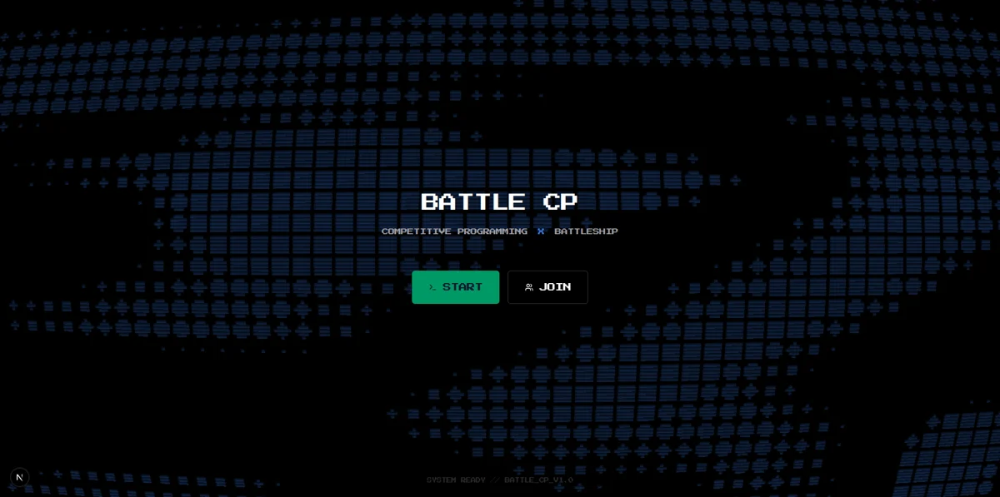
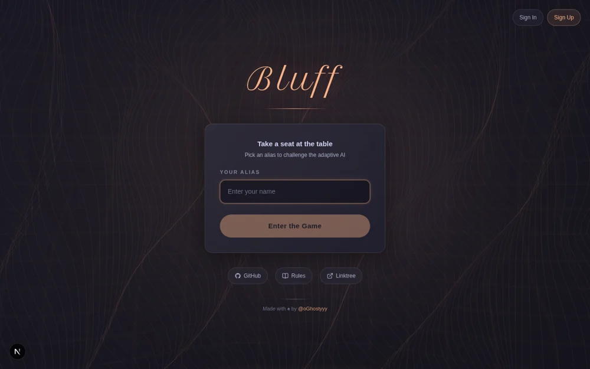

BattleCP
Live product
Multiplayer Battleship where solving Codeforces problems unlocks
weapons. Built and deployed with a Rust backend and live WebSocket
matches.
Rust / Axum / Tokio / Next.js
Engineering decisions
The server owns game rules and coordinates match state.
Codeforces submission checks connect programming progress to
gameplay, while reconnect handling keeps a match recoverable.
Public launch feedback informs iterations on the rules and
interface.

Bluff
Research prototype
An imperfect-information card-game agent combining Bayesian
opponent models, bluff prediction and persistent profiles in a
playable web prototype.
Python / PyTorch / FastAPI / Next.js
What the evaluation establishes
Local experiments compare components using seeded synthetic
opponents and held-out conditions. Some promising variants
failed game-level promotion gates. Bounded micro-game solver
results are separate from full-deck play, and the current work
does not establish generalization to human opponents. The public
repository may lag the local prototype pictured here.
Drishti-XAI
Research prototype
I built the MATLAB/Python prototype and evaluation pipeline
for a team diabetic-retinopathy research project. External testing exposed a substantial
transfer gap, documented alongside the internal results.
MATLAB / Python / PyTorch / Simulink
Key finding
Strong internal results did not transfer to an external
population. Domain shift became the central evaluation lesson.
Evaluation & limitations
The current MATLAB pipeline reports sensitivity 0.908 and
specificity 0.877 on a sealed APTOS test split (733 images).
With its threshold unchanged on Messidor-2, sensitivity falls to
0.363, specificity is 0.865, and AUC is 0.666. These are
separate internal and external evaluations, not clinical
deployment evidence. The repository is private; this summary is
based on the project's current evaluation reports.
Quality gating, vessel/lesion analysis, calibration and Grad-CAM
support the workflow. Clinician assessment and clinical
validation remain open.
PokeForge
In progress
A Pokémon battle-agent project investigating decision-making with
hidden opponent information, legal action constraints and
reproducible baselines.
Python / PyTorch / Pokémon Showdown
Current milestone
Pinned FoulPlay and Metamon baselines complete legal local Gen 9
OU battles. Paired measurement is in progress.
Scope of the work
The earlier educational prototype compares MLP and Transformer
policies on heuristic labels. Its small pilot does not establish
competitive strength. Current baseline reproduction uses
isolated environments and pinned artifacts; benchmark-server
conformance, opponent-adaptation results and public ladder
performance remain unverified. FoulPlay and Metamon are
attributed third-party baselines.